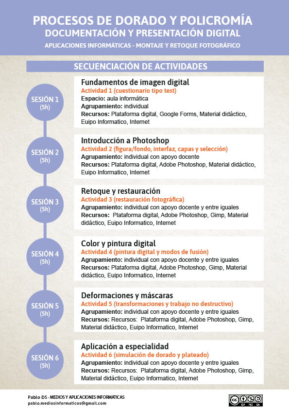

Secuenciación de actividades
La secuenciación de las actividades planteadas responde a una progresión lógica que combina la adquisición de contenidos teóricos con el desarrollo de competencias prácticas. En una primera fase, se introducen los fundamentos de la imagen digital, lo que permite establecer una base conceptual sólida sobre aspectos como el color, la resolución o los formatos gráficos.
A partir de ahí, las actividades se orientan hacia el uso práctico del software, comenzando por tareas más sencillas relacionadas con la familiarización con la interfaz y las herramientas básicas, y avanzando progresivamente hacia procesos más complejos de edición, retoque y composición de imagen. Esta progresión facilita que el alumnado vaya ganando seguridad y autonomía en el manejo de las herramientas digitales.
Finalmente, las últimas actividades están diseñadas para aplicar de forma integrada todos los conocimientos y habilidades adquiridos, conectándolos directamente con su especialidad. De este modo, el alumnado no solo comprende los conceptos, sino que es capaz de utilizarlos para mejorar la documentación y presentación de sus propios procesos artesanales, acercándose a un contexto de trabajo más profesional.
Contextualización de actividades
Actividad 1 – Fundamentos de la imagen digital. Este ejercicio tipo test está diseñado para evaluar tu comprensión sobre conceptos fundamentales relacionados con la imagen digital. A través de preguntas específicas, podrás explorar temas como el color y su percepción, la resolución y la profundidad de bits, así como los diferentes tipos de formatos gráficos utilizados en la edición y creación de imágenes. Este cuestionario te ayudará a consolidar tus conocimientos y asegurarte de que dominas los aspectos clave tratados en esta unidad.
Actividad 2 – Figura & Fondo. En esta actividad comenzaremos familiarizándonos con la interfaz gráfica del software Adobe Photoshop, la asignación de un espacio de trabajo y la configuración de paneles. A su vez, comenzaremos a trabajar con capas y grupos de capas, herramientas y menú de selección con el objetivo de generar diferentes composiciones que puedan ser guardadas individualmente como archivos independientes de bitmaps.
Actividad 3 – Restauración fotográfica. Usando las herramientas "pincel corrector puntual", "pincel corrector", "parche corrector" y "tampón de clonar" se propone eliminar las grietas y deformaciones para restaurar las imágenes propuestas.
Actividad 4 – Pintura digital. El ejercicio consiste en realizar ajustes de iluminación y color, aprender a policromar mediante las herramientas de pintura digital que ofrece Photoshop y combinar capas mediante los modos de fusión. Usando las herramientas "pincel" y "pincel mezclador" como alguno de los modos de fusión de capas se persigue generar un efecto color a imágenes que originalmente son en escala de grises.
Actividad 5 – Deformaciones y máscaras. Usando las diferentes opciones y posibilidades tanto de la "transformación libre" como las "deformaciones personalizadas" o "deformación de perspectiva", el objetivo de la actividad persigue aprender a aplicar y adaptar diferentes texturas a la geometría tridimensional de objetos. A través de los modos de fusión integraremos la volumetría de la imagen de referencia y mediante "máscaras de capa" ocultaremos de forma "no destructiva" las partes que sobren de cada textura aplicada para que no se solapen con el resto al estar fusionadas mediante los modos de fusión.
Actividad 6 – Simulación dorado y plateado. La actividad consiste en la simulación de superficies de materiales metalizados como dorado o plateado con el objetivo de poder mostrar una representación orientativa de dichos acabados en obras escultóricas.
Infografía. Línea temporal de actividades
En esta infografía puedes ver de forma visual la secuencia de actividades que vas a realizar a lo largo de la situación de aprendizaje. Está organizada para que puedas identificar fácilmente el orden de trabajo, la relación entre las distintas tareas y la progresión de los contenidos.
La línea temporal te ayudará a situarte en cada fase del proceso, desde los fundamentos de la imagen digital hasta las actividades más avanzadas de retoque y simulación de materiales, permitiéndote entender cómo se construye de manera progresiva el producto final.
